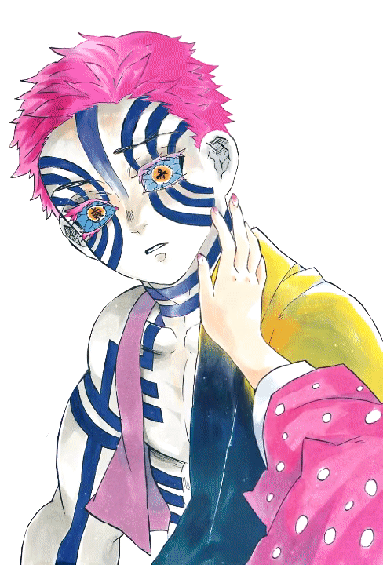
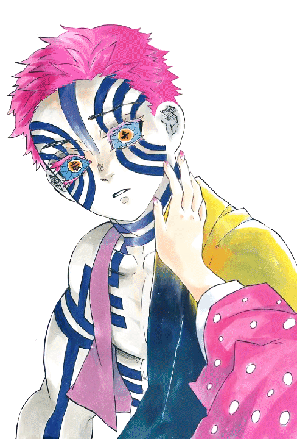
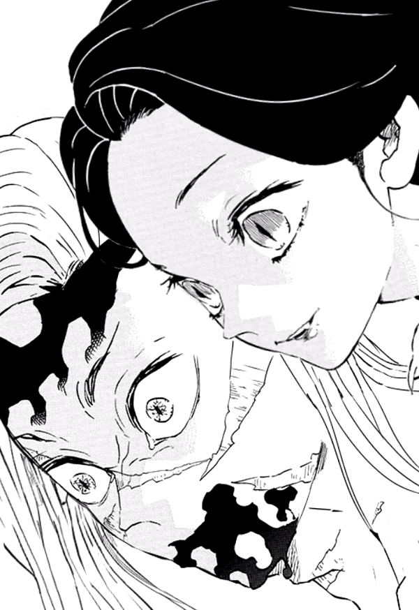
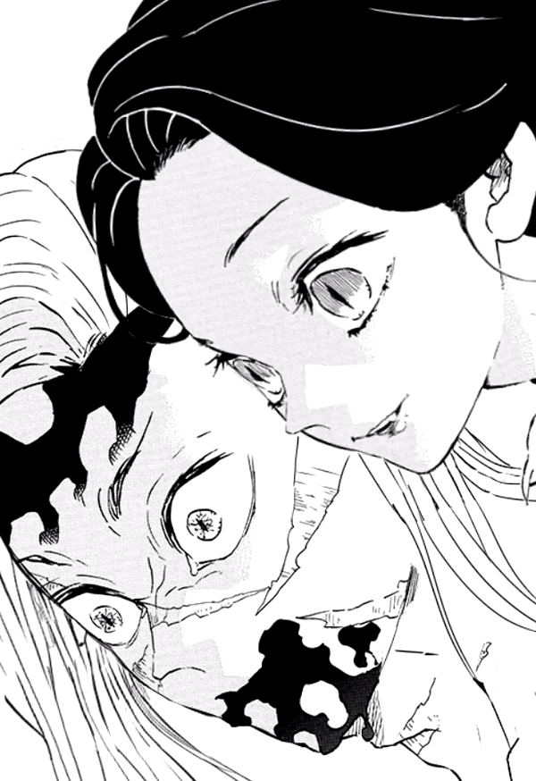
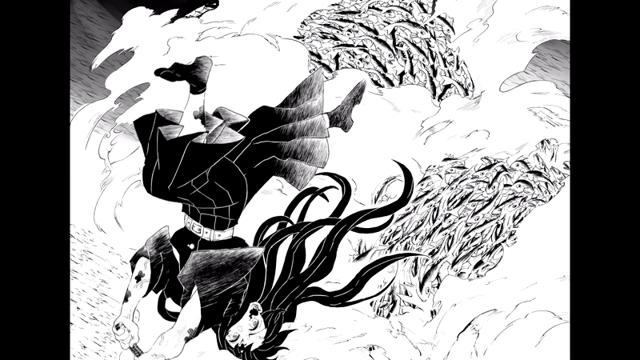
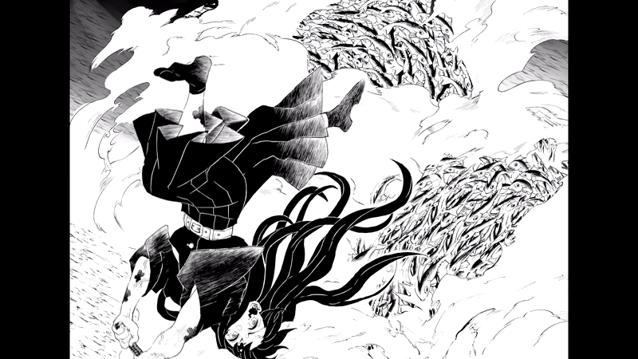

Motion illustration editing
During the pandemic, I spend some time trying out different art media and I fell in love with editing, playing with Adobe After Effects. I am a fan of "kimestu no yaiba"/ demon slayer, and I will make small practice edits using the image from the manga.
Twitter(@glaucousblue) Tumblr(@pinkongrey)
 



 



 
